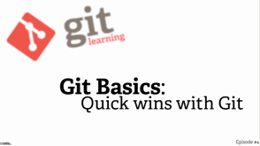

Documentation
Reference
Reference Manual
The official and comprehensive man pages that are included in the Git package itself.
Quick reference guides: GitHub Cheat Sheet (PDF) | Visual Git Cheat Sheet (SVG | PNG)
Book
Pro Git is written by Scott Chacon and Ben Straub and published by Apress.
Print copies can be purchased from Amazon and PDF, mobi, and ePub versions are available for free.
-
6. GitHub
-
7. Git Tools
-
8. Customizing Git
-
9. Git and Other Systems
-
10. Git Internals
-
1. Getting Started
-
2. Git Basics
-
3. Git Branching
-
4. Git on the Server
-
5. Distributed Git
Videos
-
What is Version Control?
Length: 05:59
-
Get Going with Git
Length: 04:26
-
What is Git?
Length: 08:15
-

Quick Wins with Git
Length: 05:06
External Links
The External Links section is a curated, ever-evolving collection of tutorials, books, videos, and other Git resources.